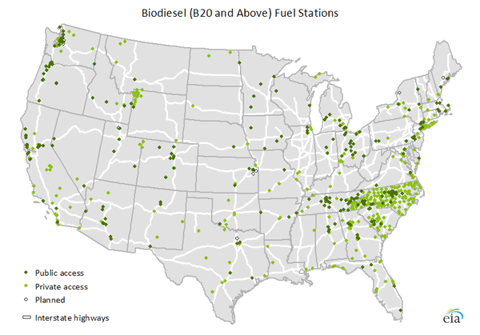
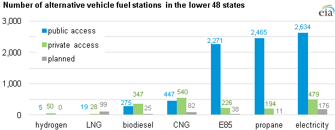

{kind=link}
{kind=link}
{kind=link}
Today in Energy
Access to alternative transportation fuel stations varies across the lower 48 states
Although gasoline remains by far the dominant transportation fuel, a variety of alternative fuels are currently in use, primarily by government and private fleets. These fuels include electricity, propane, higher ethanol-gasoline blends (E85), hydrogen, and natural gas. In aggregate, there are currently about 10,000 alternative fuel stations in the United States, compared to approximately 160,000 gasoline stations in the country.
Click on the tab headers below to see maps of the different types of alternative transportation fuel stations in the lower 48 states.
{kind=link}
Biodiesel blends differ in the proportion of petroleum diesel and bio-based fuel. The map above shows fuel stations that offer blends of at least 20% biodiesel. More than half of the stations are private access (for government or private fleets only). Of the 347 private access stations, nearly a third are in North Carolina.
To learn more, visit DOE's Alternative & Advanced Fuels: Biodiesel website.
{kind=link}
Natural gas can be compressed and stored in tanks at pressures up to 3,600 pounds per square inch to be used as transportation fuel. More than half of the compressed natural gas (CNG) fuel stations in the nation are private access.
To learn more, visit DOE's Alternative & Advanced Fuels: Natural Gas website.
{kind=link}
There are over 3,000 existing electric charging stations across the country, more stations than for any other alternative fuel. Of these, nearly 85% are publicly accessible. In total, there are more than 8,000 electric charging units available at these stations. This does not include residential electric charging units.
To learn more, visit DOE's Alternative & Advanced Fuels: Electricity website.
{kind=link}
Nearly all gasoline sold in the United States is blended with 10% ethanol content. The stations shown in the map offer E85, a gasoline-ethanol blend containing 51% to 83% ethanol. There is a major concentration of E85 stations in the corn-producing Midwest region of the United States.
To learn more, visit DOE's Alternative & Advanced Fuels: Ethanol website.
{kind=link}
Use of hydrogen as a transportation fuel requires reducing its volume by compressing the fuel (at pressures up to 10,000 pounds per square inch), cooling to very low temperatures (-423°F) to produce liquid hydrogen, or chemically bonding hydrogen to other compounds. Of the alternative fuels discussed here, hydrogen has the fewest number of fuel stations.
To learn more, visit DOE's Alternative & Advanced Fuels: Hydrogen website.
{kind=link}
Liquefied natural gas (LNG) is produced by purifying and condensing natural gas to a liquid state by cooling to -260°F. Because it needs to be stored at such cold temperatures, LNG vehicles require specialized vacuum-insulated pressure vessels. LNG is typically only used in heavy-duty vehicles. Compared to the number of existing LNG fuel stations, there is a large network of stations planned along interstate highways.
To learn more, visit DOE's Alternative & Advanced Fuels: Natural Gas website.
{kind=link}
Propane has the second-highest number of fuel stations among alternative fuels. Over 90% of the existing stations are publicly accessible. Of the private access stations, nearly 60% are located in Indiana.
To learn more, visit DOE's Alternative & Advanced Fuels: Propane website.
Several alternative fuels have been developed for use in motor vehicles. Most alternative fuels require vehicles specifically made to handle that fuel, such as electric vehicles. Other fuels such as E85 (a gasoline blend with up to 85% ethanol) may be used in flex-fuel vehicles. The use of alternative fuels often requires new refueling station infrastructure. The maps above show the distribution of alternative fuel stations across the lower 48 states.
Note: LNG is liquefied natural gas, CNG is compressed natural gas, and E85 is a type of gasoline-ethanol blend.
The Alternative Fuels & Advanced Vehicles Data Center (a DOE program initiative) provides many resources for learning about alternative fuels and tools for locating alternative fuel stations.
Archive
- 2017
- 2016
- 2015
- 2014
- 2013
- 2012
- 2011